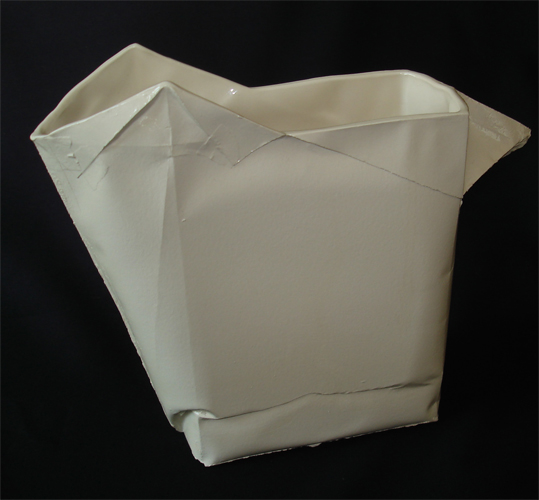

Paper Pitcher
The assignment was to make a ceramic water pitcher with a three-part plaster mould.
I learned that one of the material properties of plaster is that it would copy the surface quality of whatever it is cast on very accurately.
This gave me the idea that for the form I would use a paper mould to cast the final three-part mould onto. The plaster would make it possible
to give the water pitcher the skin and look of paper.
First I folded a pitcher from stiff paper. I left all the pieces of tape I used on the paper because I knew they would remain visible in the
final ceramic pitcher and add some detail. The folded pitcher I filled with plaster to give it strength. This made the paper wet and caused the
wrinkles in the bottom, which added to its charm.
I made different versions of the final pitcher, fully grazed or just glazed on the inside. The fully glazed pitcher is stronger but the version
with the unglazed outside really has a skin like paper.